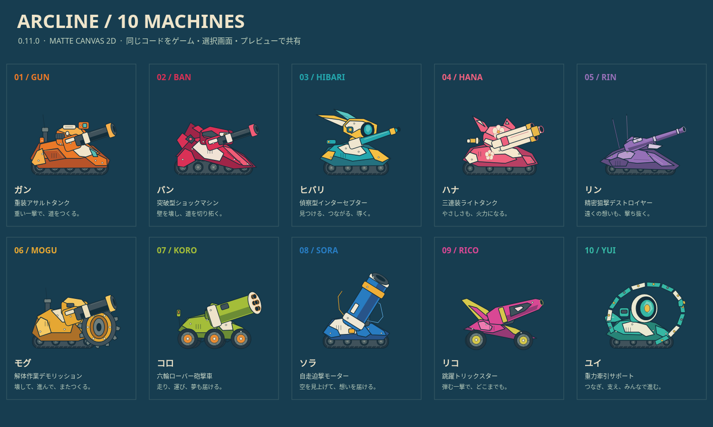

閉ざされた道にも、守ってきた仕事と暮らしがある。新しい中ボスと、つながり直す物語。10機の相棒で、その先へ。
巻上げ機、橋の補修機、霧の信号機。5・15・25…95面に10体の中ボスが登場します。特徴のある機構を壊すと攻撃が弱まり、コアを狙うチャンスに。10面ごとの章ボスも、それぞれの姿で待っています。
守り手の名前と特徴、撃破後の返答を短く表示。物語のための待ち時間はありません。もっと知りたいときは「旅の記録」で背景や仲間の関係を読めます。
転移弾の着地判定を緩和。低い天井や段差の近くでも、安全な足場を探します。照準を90°より後ろへ回すと、機体も後ろを向きます。
必殺技のダメージを調整。広い攻撃の合計威力を抑え、精密弾は中心への命中を活かす形に。弾道の太さと着弾演出の大きさは従来通りです。
マットな重機の世界へ描き方を統一。反射する面、ひび割れた遮蔽、橋、風、磁場が、それぞれの形で作用を伝えます。既存の100面の地形と箱の配置はそのままです。

通常弾と転移は無限、必殺は各面3発。拾った武器とスキルは中ボス戦を越えて持ち越し、10面ごとの章ボスを倒すとリセットします。
日本語・英語の切替、長押し中の取消、左の移動・照準、横向きプレイも継続。iPhoneでブラウザの表示を隠したい場合は、Safariの「共有 → ホーム画面に追加」から起動できます。
詳しい変更と確認状況 ／ 以前のお知らせ